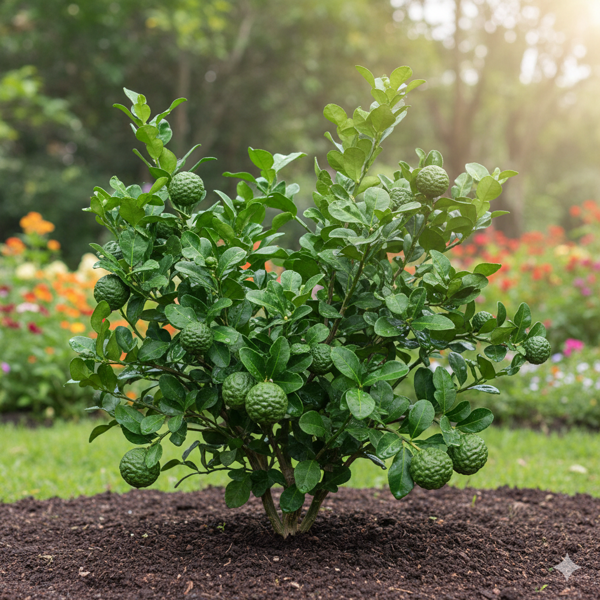
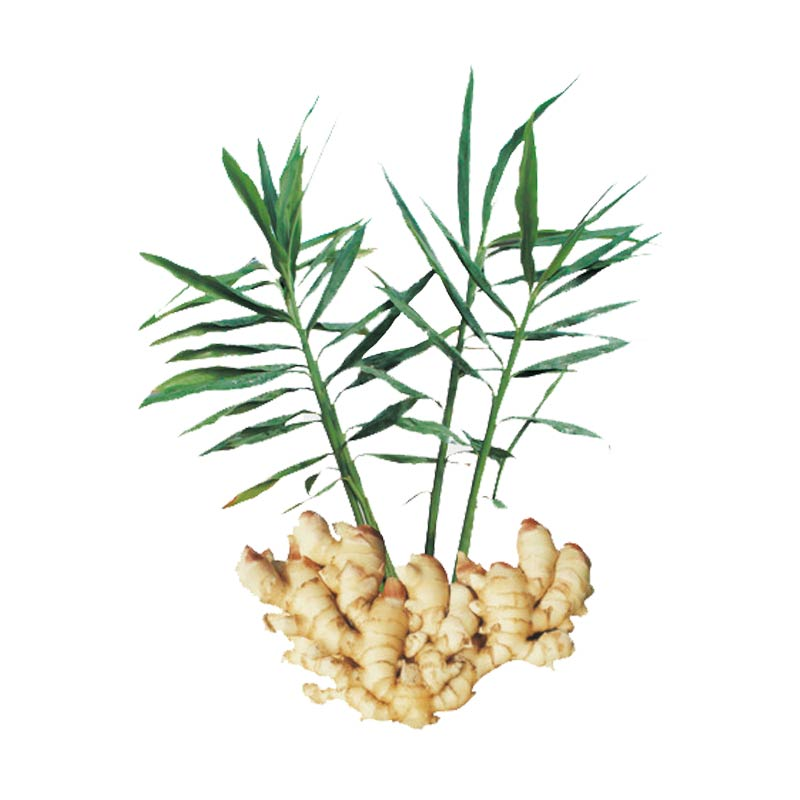

Dari Kebun ke Produk: Mengenal Jeruk Purut & Jahe
Dua tanaman dapur yang wangi dan hangat, dari ciri-cirinya sampai jadi produk yang bernilai jual.
Setelah belajar, kamu dapat:
- Mengenali ciri dan bagian yang dimanfaatkan dari kedua tanaman.
- Menjelaskan kandungan dan manfaatnya secara sederhana.
- Menyebutkan contoh produk olahan beserta alur pembuatannya.
Kenali Tanamannya
Jeruk purut
Citrus hystrix, famili Rutaceae
- Bagian yang dimanfaatkan
- Daun dan buah.
- Ciri khas
- Daun tampak seperti dua helai bersambung (mirip angka 8) karena tangkai daunnya melebar. Kulit buah berbintil dan aromanya kuat.
- Kandungan
- Minyak atsiri (senyawa aromatik yang mudah menguap), misalnya sitronelal, serta flavonoid.

Jahe
Zingiber officinale, famili Zingiberaceae
- Bagian yang dimanfaatkan
- Rimpang, yaitu batang yang tumbuh menjalar di dalam tanah (bukan akar).
- Jenis umum
- Jahe gajah, jahe emprit, dan jahe merah.
- Kandungan
- Gingerol dan shogaol (penyebab rasa pedas hangat) serta minyak atsiri.
Manfaat
Manfaat dikelompokkan per bidang. Kata "berpotensi" dan "membantu" dipakai karena sebagian manfaat masih terus diteliti.
Jeruk purut
- Kuliner
- Penyedap masakan, misalnya soto dan rawon.
- Kesehatan tradisional
- Aromanya dipakai sebagai aromaterapi.
- Rumah tangga
- Pengharum alami. Berpotensi sebagai pengusir nyamuk.
- Ekonomi
- Dijual sebagai daun segar atau bahan olahan.
Jahe
- Kuliner
- Bumbu masakan dan minuman hangat.
- Kesehatan tradisional
- Membantu meredakan mual dan membantu pencernaan. Berpotensi sebagai antioksidan (zat yang membantu menangkal radikal bebas).
- Rumah tangga
- Stok bumbu dapur dan bahan wedang di rumah.
- Ekonomi
- Dijual segar atau diolah menjadi aneka produk.
Informasi ini untuk tujuan edukasi, bukan pengganti saran tenaga kesehatan.
Dari Tanaman ke Produk
- Panen
- Sortir & cuci
- Pengolahanpengeringan, penyulingan, atau perebusan
- Pengemasan
- Produk
Produk jeruk purut
Daun kering / bumbu bubuk
Bahan: daun jeruk purut.
Daun dicuci, dikeringkan di tempat teduh atau oven suhu rendah, lalu dihaluskan.
Nilai tambah: awet dan praktis disimpan.
Minyak atsiri
Bahan: daun atau kulit buah.
Bahan disuling dengan uap air. Uap yang mengembun dipisahkan dari airnya.
Nilai tambah: bahan dasar aromaterapi dan produk wangi, harganya tinggi.
Sabun & sampo herbal
Bahan: basis sabun atau sampo, minyak atsiri jeruk purut.
Minyak atsiri dicampurkan ke dalam basis, lalu dicetak atau dikemas.
Nilai tambah: aroma segar, nilai jual lebih tinggi.
Lilin aromaterapi
Bahan: lilin, minyak atsiri.
Lilin dilelehkan, ditambah minyak atsiri, dituang ke wadah, lalu didinginkan.
Nilai tambah: dekorasi sekaligus penyegar suasana.
Pengharum ruangan
Bahan: minyak atsiri, air, alkohol.
Semua bahan dicampur, lalu dimasukkan ke botol semprot.
Nilai tambah: pengharum berbahan alami.
Produk jahe
Wedang jahe
Bahan: jahe, air, gula merah.
Jahe digeprek, direbus sampai mendidih, lalu disaring.
Nilai tambah: minuman hangat tradisional yang mudah dibuat.
Minuman jahe instan
Bahan: sari jahe, gula.
Sari jahe dimasak dengan gula sampai mengkristal, lalu diayak.
Nilai tambah: praktis diseduh dan tahan lama.
Sirup jahe
Bahan: jahe, gula, air.
Jahe direbus dengan gula sampai agak kental, disaring, lalu dibotolkan.
Nilai tambah: bisa disajikan hangat atau dingin.
Permen & manisan jahe
Bahan: jahe, gula.
Jahe diiris, dimasak dengan gula, lalu dikeringkan.
Nilai tambah: camilan dan oleh-oleh khas.
Bubuk jahe
Bahan: jahe.
Jahe diiris tipis, dikeringkan, lalu digiling halus.
Nilai tambah: awet, mudah dipakai untuk bumbu atau seduhan.
Balsam / minyak hangat
Bahan: ekstrak atau minyak jahe, minyak pembawa, lilin.
Bahan dipanaskan perlahan dan dicampur, lalu dituang ke wadah kecil.
Nilai tambah: produk rumah tangga yang memberi rasa hangat.
Bandingkan
| Jeruk purut | Jahe | |
|---|---|---|
| Bagian yang dimanfaatkan | Daun dan buah | Rimpang |
| Senyawa utama | Minyak atsiri (sitronelal), flavonoid | Gingerol, shogaol, minyak atsiri |
| Aroma / rasa | Aroma segar dan kuat khas jeruk | Pedas hangat, aroma tajam |
| Contoh produk | Minyak atsiri, lilin aromaterapi | Wedang, sirup, bubuk jahe |
Tahukah Kamu?
Jahe yang kamu masak itu bukan akar, tapi rimpang: batang yang tumbuh di dalam tanah.
Daun jeruk purut yang tampak "dua helai" sebenarnya satu helai daun dengan tangkai yang melebar.
Saat jahe dikeringkan atau dipanaskan, sebagian gingerol berubah menjadi shogaol yang rasanya lebih pedas.
Dalam bahasa Inggris, jeruk purut disebut makrut lime. Daunnya juga dipakai di masakan Thailand.
Kuis
Jawab 6 soal untuk menguji pemahamanmu.
Ringkasan
- Jeruk purut (Citrus hystrix) dimanfaatkan daun dan buahnya. Cirinya daun mirip angka 8 dan aroma kuat.
- Jahe (Zingiber officinale) dimanfaatkan rimpangnya, yang mengandung gingerol dan shogaol.
- Keduanya bermanfaat di bidang kuliner, kesehatan tradisional, rumah tangga, dan ekonomi.
- Alur produk: panen, sortir & cuci, pengolahan, pengemasan, lalu produk.
- Pengolahan menambah nilai jual, misalnya jadi minyak atsiri, sirup, atau bubuk jahe.
Referensi
- Buku Biologi SMA kelas X: [tambahkan judul, penulis, dan tahun]
- Kementerian Pertanian RI atau BRIN, informasi tanaman rempah dan obat: [tambahkan sumber]
- Jurnal ilmiah tentang gingerol dan shogaol pada Zingiber officinale: [tambahkan sumber]
- Jurnal ilmiah tentang minyak atsiri Citrus hystrix: [tambahkan sumber]